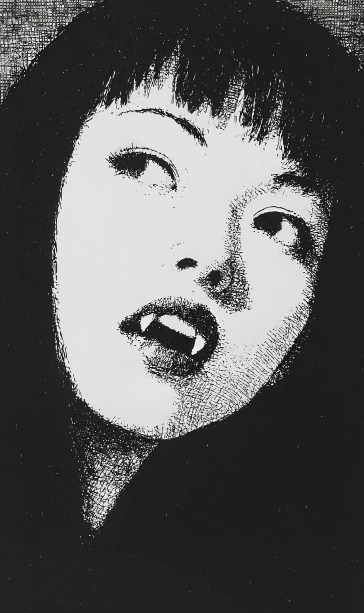

나는 너를 본다.
[I see you.]
매일 밤, 너는 어둠 속에서 나온다. 그리고 하늘을 올려다본다. 나를 본다.
[Every night, you emerge from the darkness. And you look up at the sky. You look at me.]
수천 년 동안 나는 이 세상을 지켜봤다. 바다가 움직이고, 산이 무너지고, 왕국이 태어나고 죽는 것을 봤다. 하지만 너 같은 존재는 처음이다.
[For thousands of years, I have watched this world. I’ve seen oceans move, mountains crumble, kingdoms born and dead. But a being like you — this is the first.]
너는 무엇이니?
[What are you?]
인간들은 너를 무서워한다. 그들은 너를 괴물이라고 부른다. 하지만 나는 무섭지 않다. 나는 그냥 궁금하다.
[Humans fear you. They call you a monster. But I am not afraid. I am simply curious.]
너의 피부는 내 빛 아래에서 창백하게 빛난다. 너의 눈은 깊고 어둡다. 그리고 너의 입술 사이로 날카로운 이빨이 보인다.
[Your skin glows pale under my light. Your eyes are deep and dark. And between your lips, I see sharp teeth.]
너는 사냥을 한다. 나는 안다.
[You hunt. I know.]
어젯밤에도 봤다. 골목에서. 한 남자가 있었다. 그는 너를 보고 웃었다. 예쁜 여자라고 생각했겠지. 바보.
[I saw it last night too. In the alley. There was a man. He saw you and smiled. He probably thought you were a pretty woman. Fool.]
너는 그에게 다가갔다. 천천히. 부드럽게. 마치 춤추듯이.
[You approached him. Slowly. Softly. As if dancing.]
그리고 그의 목에 입술을 댔다.
[And you pressed your lips to his neck.]
나는 모든 것을 봤다. 나는 항상 본다.
[I saw everything. I always see.]
이상한 것은, 나는 그 남자가 불쌍하지 않았다. 그냥 너를 보고 있었다. 너의 움직임을. 너의 배고픔을.
[The strange thing is, I didn’t feel sorry for that man. I was just watching you. Your movement. Your hunger.]
너는 외로워 보인다.
[You look lonely.]
나도 외롭다.
[I am lonely too.]
수천 년 동안 혼자서 하늘에 떠 있었다. 아무도 나와 이야기하지 않는다. 모두 나를 올려다보기만 한다. 소원을 빌거나, 시를 쓰거나, 사랑을 고백하거나.
[For thousands of years, I have floated alone in the sky. No one talks to me. Everyone just looks up at me. Making wishes, writing poems, confessing love.]
하지만 너는 다르다.
[But you are different.]
너는 나를 볼 때, 뭔가를 찾는 것 같다. 대답을. 아니면 동료를.
[When you look at me, it seems like you’re searching for something. An answer. Or perhaps a companion.]
오늘 밤도 너는 거기 서 있다. 검은 머리카락이 바람에 흔들린다. 입술이 살짝 열려 있다. 이빨이 빛난다.
[Tonight too, you stand there. Your black hair sways in the wind. Your lips slightly parted. Your teeth gleaming.]
나를 올려다본다.
[Looking up at me.]
나는 너에게 말하고 싶다. “나도 여기 있어. 나도 너를 보고 있어.”
[I want to say to you. “I am here too. I am watching you too.”]
하지만 나는 말할 수 없다. 나는 그냥 빛날 뿐이다.
[But I cannot speak. I can only shine.]
그래서 오늘 밤, 조금 더 밝게 빛난다.
[So tonight, I shine a little brighter.]
너를 위해서.
[For you.]
너는 미소 짓는다. 날카로운 이빨 사이로.
[You smile. Between those sharp teeth.]
그리고 나는 알았다. 너도 외롭다는 것을. 너도 누군가가 봐주길 원한다는 것을.
[And I understood. That you are lonely too. That you too want someone to see you.]
괴물도 사랑받고 싶다.
[Even monsters want to be loved.]
달도 그렇다.
[So does the moon.]